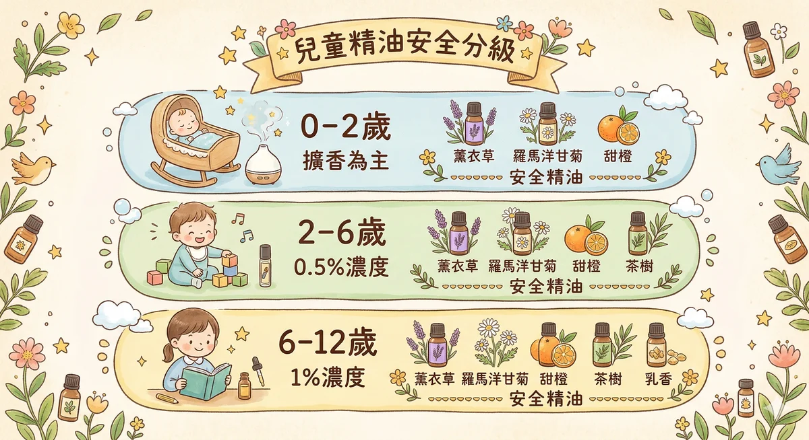

兒童芳療的科學基礎
大人跟小孩的身體差異，不只是體型大小。從皮膚厚度到肝臟代謝能力，小朋友的身體運作邏輯跟成人是不同的。如果你用成人的劑量和方式給孩子用精油，等於讓一台還在校準的儀器承受超出負荷的訊號。
- 皮膚厚度：比成人薄 40-60%，嬰幼兒的角質層還沒有完全發育，精油分子穿透皮膚的速度更快、吸收量更大。同樣的濃度，孩子實際吸收的劑量可能是大人的兩倍以上。
- 肝臟酵素：7 歲前尚未完全成熟，肝臟是代謝精油的主要器官。兒童的肝臟酵素系統（特別是 CYP450 家族）要到 7 歲左右才接近成人水準，在那之前，代謝精油的速度慢、排出慢、累積風險高。
- 神經系統：還在發育中，某些精油成分（如樟腦、薄荷腦）對發育中的神經系統有過度刺激的風險，嚴重時可能引發呼吸抑制或痙攣。大人覺得「涼涼的很舒服」，對嬰幼兒來說可能是危險的。
- 嗅覺系統：比大人更靈敏，兒童的嗅覺受器密度更高，對氣味的感受強度遠超過成人。你覺得剛好的擴香濃度，對小朋友來說可能已經太濃了。少，就是多。
年齡分級安全指南

這張表是整篇最重要的部分。列印出來貼在精油櫃旁邊也不為過。每個年齡層能用什麼、不能用什麼、濃度多少，一目了然。
| 年齡 | 可否使用 | 使用方式 | 濃度 | 安全精油 |
|---|---|---|---|---|
| 0-3 個月 | 僅限純露 | 僅擴香（不接觸皮膚） | N/A | 薰衣草純露、洋甘菊純露 |
| 3-6 個月 | 非常有限 | 擴香最多 15 分鐘 | 0.1%（1 滴 / 50ml 基底油） | 真正薰衣草、羅馬洋甘菊 |
| 6-24 個月 | 有限度 | 擴香 + 稀釋後塗抹 | 0.25%（1 滴 / 20ml 基底油） | 薰衣草、洋甘菊、甜橙、紅橘 |
| 2-6 歲 | 中等範圍 | 擴香 + 塗抹 + 稀釋泡澡 | 0.5-1%（1-2 滴 / 10ml 基底油） | 以上 + 茶樹、乳香、檸檬（僅擴香，光敏性不上皮膚） |
| 6-12 歲 | 較寬範圍 | 同成人，濃度降低 | 1-1.5%（2-3 滴 / 10ml 基底油） | 多數安全精油，以降低濃度使用 |
絕對禁用精油清單
不是所有精油都適合孩子。有些精油在成人身上安全無虞，但對 6 歲以下的兒童來說，可能造成呼吸窘迫甚至痙攣。這份清單請記牢。
6 歲以下絕對避免的精油
- 藍膠尤加利 Eucalyptus globulus，含高濃度 1,8-桉油醇，可能引發幼兒呼吸抑制
- 胡椒薄荷 Mentha piperita，薄荷腦可能導致嬰幼兒喉頭痙攣
- 迷迭香（樟腦型）Rosmarinus officinalis ct. camphor，樟腦成分有神經毒性風險
- 冬青 Gaultheria procumbens，含水楊酸甲酯，兒童誤食風險極高
- 樟腦 Cinnamomum camphora，直接的神經刺激劑，嬰幼兒禁用
- 鼠尾草 Salvia officinalis，含側柏酮，有致痙攣風險
參考文獻：Robert Tisserand & Rodney Young,《Essential Oil Safety》第二版。這本書是全球芳療安全的聖經，如果你只讀一本，讀這本。
安全替代方案
孩子鼻塞想用尤加利？選澳洲尤加利（Eucalyptus radiata），它的 1,8-桉油醇含量較低、性質溫和，3 歲以上可以用。3 歲以下呢？用薰衣草加茶樹擴香，一樣有支持呼吸道的效果，風險低得多。
常見兒童問題 × 芳療方案
以下八個方案，每一個都標了適用年齡、配方、用法、和什麼時候應該去看醫生。芳療是輔助，不是替代醫療。這條線永遠不能模糊。
感冒鼻塞
怎麼回事
鼻黏膜腫脹，呼吸不順暢。小朋友還不太會自己擤鼻涕，所以鼻塞對他們來說比大人更不舒服，晚上特別明顯。
配方
擴香器加水後滴入：真正薰衣草 2 滴 + 茶樹 1 滴 + 檸檬 1 滴。
用法
在孩子房間擴香，最長 30 分鐘，保持門窗微開通風。睡前擴香結束後關機，不要整夜開著。
什麼時候看醫生
發燒超過 38.5°C 持續超過兩天、鼻涕變黃綠色濃稠、呼吸急促或費力、精神明顯變差。這些是感染加重的訊號，不要等。
夜間咳嗽
怎麼回事
躺下來的時候鼻涕倒流刺激喉嚨，或者乾冷空氣讓呼吸道不舒服。夜咳比白天咳更讓爸媽焦慮，因為你聽得見但幫不上忙。
配方
甜杏仁油 10ml + 真正薰衣草 1 滴 + 乳香 1 滴，調勻。
用法
睡前取適量塗在孩子的胸口和上背部，輕柔畫圓按摩到吸收。手要先搓熱，動作慢一點，讓按摩本身也成為一種安撫。
什麼時候看醫生
咳嗽持續超過一週未改善、出現喘鳴聲（像口哨的聲音）、咳嗽時胸部明顯凹陷、咳出血絲。
睡不著 / 夜驚
怎麼回事
小朋友的睡眠週期比大人短，淺眠期多，容易在半夜醒來或突然大哭（夜驚）。有時候是白天刺激太多，大腦還在消化。
配方
枕頭噴霧：薰衣草純露直接噴在枕頭旁（不要噴在臉附近）。或者擴香：真正薰衣草 2 滴 + 羅馬洋甘菊 1 滴，睡前 15-20 分鐘開始擴香，睡著後關閉。
用法
重點不只是精油，而是「儀式感」。每天睡前固定時間、固定氣味，讓孩子的身體學會「聞到這個味道就是要睡覺了」。嗅覺記憶是所有感官裡最直覺的，用氣味建立睡眠信號比講道理有效得多。
什麼時候看醫生
夜驚頻率高（一週超過三次）且持續一個月以上、伴隨夢遊、白天精神異常疲倦或行為改變。
蚊蟲叮咬
怎麼回事
蚊蟲叮咬後皮膚紅腫發癢，小朋友控制不住會一直抓，抓破了容易感染。
配方
蘆薈凝膠 5ml + 茶樹 1 滴，攪拌均勻。
用法
用棉花棒沾取，點在叮咬處，一天可重複 2-3 次。茶樹有清潔和舒緩的效果，蘆薈幫助降溫。不要讓孩子自己塗，避免不小心碰到眼睛。
什麼時候看醫生
叮咬處紅腫範圍持續擴大、出現水泡或膿包、伴隨發燒、局部有明顯硬塊。
肚子痛 / 脹氣
怎麼回事
嬰幼兒的消化系統還不成熟，脹氣和腸絞痛很常見。肚子鼓鼓的、哭鬧不安、把腿縮向肚子，都是脹氣的典型表現。
配方
甜杏仁油 10ml + 甜橙 1 滴，調勻。6 個月以下的寶寶請用純的甜杏仁油按摩，不加精油。
用法
取適量油在手心搓熱，以肚臍為中心，順時針方向輕柔畫圓按摩腹部。順時針是跟著大腸蠕動的方向走，幫助氣體排出。動作要慢、力道要輕，像在畫一個溫柔的圓。
什麼時候看醫生
持續劇烈哭鬧超過 3 小時、腹部摸起來硬邦邦、伴隨嘔吐或血便、體重增加停滯。
焦慮 / 分離焦慮
怎麼回事
上幼兒園第一天、爸媽出門上班、換新環境，分離焦慮是發展過程的正常現象，但孩子的情緒是真實的。他們沒辦法跟你講道理，但他們的鼻子可以記住「安全」的味道。
配方
擴香：甜橙 2 滴 + 真正薰衣草 1 滴。或者：在一條小手帕上滴 1 滴薰衣草，放在孩子的口袋或書包裡。
用法
關鍵是讓這個氣味和「跟爸媽在一起的安全感」連結。先在家裡一起聞、一起玩，建立正向的嗅覺記憶，然後到陌生環境時，這條手帕就是一個可以帶著走的安全感。這就是認知芳療在日常裡最自然的應用。
什麼時候看醫生
分離焦慮嚴重到影響日常作息（完全無法上學、持續數週）、伴隨退化行為（已戒尿布又開始尿床）、出現自傷行為。
注意力不集中
怎麼回事
寫功課坐不住、看書看三分鐘就跑掉，先確認這是不是正常的兒童專注力範圍（6 歲的孩子平均專注力大約 12-18 分鐘，不是 60 分鐘）。如果是在合理範圍內，芳療可以當一個溫和的輔助。
配方
擴香：檸檬 2 滴 + 迷迭香（桉油醇型）1 滴。注意：迷迭香只適用 6 歲以上，而且要選桉油醇型（ct. cineole），不是樟腦型。
用法
寫功課前 5 分鐘開始擴香，寫功課的時候持續，最長 30 分鐘。檸檬的清新感有助於提振精神，迷迭香在傳統上被認為有支持記憶的效果。但別期望精油能取代適當的休息和運動。
什麼時候看醫生
持續性的注意力問題影響學習和社交、老師反覆反映相同狀況、伴隨衝動控制困難。這些需要專業評估，不是芳療的範疇。
皮膚過敏 / 濕疹
怎麼回事
兒童濕疹（異位性皮膚炎）在台灣非常普遍，皮膚乾燥發紅發癢，反覆發作。精油在這裡的角色是舒緩不適，不是根治。基底油的保濕效果往往比精油本身更重要。
配方
荷荷芭油 20ml + 德國洋甘菊 1 滴，調勻。荷荷芭油的結構最接近人體皮脂，溫和不刺激。
用法
第一次使用務必先做貼膚測試：取少量塗在前臂內側，等 24 小時觀察有無紅腫。確認安全後，薄薄塗在患處，一天 1-2 次。急性發作期（皮膚破裂流組織液）不要用精油，那時候只用醫生開的藥。
什麼時候看醫生
濕疹範圍擴大或加重、破皮處出現感染跡象（化膿、紅腫熱痛）、影響睡眠品質、使用精油後反而更紅更癢（立即停用）。
親子芳療活動
芳療不是給小朋友吃藥。是在生活裡多一個溫柔的選擇。下面三個活動不需要準備太多東西，重點是你跟孩子一起做的那個過程。
嗅覺猜猜看
準備 3-5 種孩子認識的氣味，可以是精油，也可以是生活裡的東西：橘子皮、薄荷葉、肉桂棒、咖啡豆。讓孩子閉上眼睛，聞一聞，猜猜看是什麼。
這個遊戲在訓練的是嗅覺辨識和語言表達。「這個聞起來像什麼？讓你想到什麼？」，你會發現孩子描述氣味的方式出乎意料地有創意。「聞起來像下過雨的操場」「像阿嬤家的味道」，這些都是真正的嗅覺覺察。
情緒精油卡
準備幾張空白卡片，讓孩子畫上不同的表情：開心、難過、生氣、害怕、想睡覺。然後一起聞幾支精油，把精油跟表情配對。「甜橙聞起來像開心」「薰衣草聞起來像想睡覺」，配對沒有標準答案，重點是孩子自己的感受。
做完以後，這些卡片可以變成日常工具。孩子說不出自己怎麼了的時候，讓他翻一張卡片告訴你，然後一起聞那個對應的氣味。這是在用嗅覺搭一座橋，連接孩子的內在世界和外在表達。
睡前氣味儀式
每天睡前讓孩子自己選「今天晚上的味道」。準備兩三個選項（純露或擴香用的精油），讓他聞一聞，自己決定。然後一起噴枕頭或開擴香器，配上刷牙、說故事、關燈的固定流程。
這個儀式做的事情有兩層：表面上是幫助入睡，底層是在給孩子「自主權」，他可以為自己做一個小小的決定。在覺察的語言裡，自主權是安全感的起點。而氣味會成為一個錨點，身體記住了：聞到這個味道，就是可以安心放鬆的時候。
給爸媽的 5 個提醒
以上所有內容的前提，都建立在這五件事情上面。當你不確定的時候，回來看這裡。
-
永遠先做貼膚測試。取稀釋後的精油少量塗在孩子前臂內側，等 24 小時。沒有紅腫、發癢、起疹子，才能正式使用。每一支新的精油都要重新測試，就算是同品牌不同批次也一樣。
-
精油不是越多越好。兒童芳療的黃金法則是 less is more。一滴就夠的時候不要用兩滴，能用擴香就不要塗皮膚，能用純露就不要用精油。孩子的身體會給你回饋，你只需要觀察。
-
不要讓孩子直接接觸精油瓶。精油瓶蓋雖然有安全設計，但孩子的好奇心和手指靈活度不能低估。誤食精油是急診等級的事情。用完立刻收好，放在孩子拿不到的高處，跟藥品同等級管理。
-
擴香時間最長 30 分鐘，保持通風。大人可能習慣整天開著擴香機，但孩子的嗅覺更敏感，長時間暴露在精油氣味裡反而會造成嗅覺疲勞或不適。擴香完打開窗戶，讓空氣流通。
-
有任何異常反應，立即停用。皮膚發紅、呼吸改變、情緒異常煩躁，停用精油，然後用基底油（甜杏仁油、椰子油都可以）擦拭塗抹處。注意：是用油擦，不是用水洗。精油不溶於水，水洗只會讓它擴散。
給老師和保姆的提醒
如果你不是爸媽，而是幼兒園老師、保姆、或者任何需要照顧別人家孩子的角色，精油的使用有一些額外需要注意的事情。因為你面對的不只是一個孩子，而是一整群不同體質的孩子，還有他們背後的家長。
-
學校或幼兒園擴香，需要先徵求所有家長同意。精油是植物萃取物，但不代表所有人都能接受。有些孩子對特定氣味過敏，有些家庭的信仰不允許，有些孩子有氣喘或呼吸道問題。在教室這種密閉空間擴香影響的是每一個人，所以必須事先通知、取得同意。一份簡單的家長同意書就夠了。
-
不要用精油代替醫療。孩子發燒超過 38.5°C，直接看醫生，不要想著用薰衣草或茶樹退燒。精油可以在孩子康復過程中提供舒緩，但它不是藥。尤其在團體環境中，你的判斷可能影響病情延誤。發燒、嘔吐、腹瀉、外傷出血，這些都是立刻聯絡家長和就醫的情況。
-
孩子不喜歡某個味道，不要強迫。這不是挑食，是真實的神經反應。嗅覺偏好有很強的個體差異，跟基因、過去經驗、甚至情緒狀態都有關。孩子說「好臭」或「不喜歡」的時候，那是他們的嗅覺系統在告訴你這個氣味不適合他們。尊重它，換一支試試看就好。
-
精油瓶蓋要有兒童安全鎖，放在孩子拿不到的地方。很多精油瓶的滴頭設計讓孩子很容易就把整瓶倒出來。誤食精油是急診等級的事情，茶樹、尤加利、薄荷，這些常見精油如果被孩子喝下去，會造成嚴重的口腔灼傷和神經症狀。用完立刻鎖起來，跟藥品同等級管理。
4 個季節的兒童芳療
孩子的身體比大人更敏感地跟著季節走。春天打噴嚏、夏天被蚊子咬、秋天開學焦慮、冬天反覆感冒，這些不是意外，是季節的節奏。精油可以在每個轉換點幫一點小忙，但記住，它只是輔助，不是解藥。
春天｜花粉季舒緩
春天花粉量大，很多孩子會開始打噴嚏、揉眼睛、鼻塞。擴香薰衣草 2 滴 + 茶樹 1 滴，每次 20 到 30 分鐘。薰衣草裡的沉香醇有舒緩呼吸道的作用，茶樹的桉葉素可以幫助鼻腔暢通。
擴香完記得開窗通風。另外提醒一下，這個方式是舒緩不適，不是根治過敏。如果孩子的過敏症狀嚴重到影響睡眠或日常生活，還是要看醫生。
夏天｜天然防蚊
用 100ml 純水（或蘆薈凝膠）加入香茅 2 滴 + 檸檬香茅 1 滴，搖勻後噴在衣服上或露出的皮膚上。0.5% 的濃度對兒童來說是安全的，而且比 DEET 等化學防蚊液溫和很多。
但要說實話，天然防蚊的持續時間比化學防蚊液短，大約 1 到 2 小時就需要補噴。去蚊子很多的戶外環境（河邊、草地）如果只靠精油防蚊可能不太夠，可以搭配物理防蚊（長袖、蚊帳）一起用。使用前先在孩子手臂內側做貼膚測試。
秋天｜開學焦慮穩定
開學是很多孩子的焦慮高峰期，新環境、新老師、跟爸媽分離。擴香甜橙 2 滴 + 乳香 1 滴，睡前 20 分鐘開始。甜橙的氣味溫暖熟悉，幾乎所有孩子都喜歡，它能降低焦慮感。乳香讓呼吸變深變慢，幫助入睡。
除了擴香，更重要的是陪伴。睡前聊聊明天學校會發生什麼、有什麼好玩的事情，讓孩子對「明天」有具體的想像，焦慮就不會那麼模糊巨大。精油幫忙安定身體，你的聲音安定他的心。
冬天｜感冒季防護
冬天室內門窗緊閉，空氣不流通，病毒傳播速度加快。擴香茶樹 1 滴 + 薰衣草 1 滴 + 檸檬 1 滴，每次 30 分鐘，然後開窗通風至少 10 分鐘。茶樹和檸檬的揮發性成分在空氣中有淨化的效果，薰衣草負責讓氣味不要太刺激。
重點是「30 分鐘擴香 + 開窗通風」這個循環。很多人只擴香不通風，那等於在密閉空間裡一直加東西進去，精油濃度越來越高，反而刺激呼吸道。精油是幫忙淨化空氣的，不是拿來密封房間的。
安全濃度計算完整指南
很多爸媽最困惑的就是「到底要滴幾滴」。這裡用最簡單的方式教你算。記住一個基本數字：1 滴精油大約是 0.05ml。10ml 基底油裡加 1 滴精油 = 0.5% 濃度。兒童芳療的原則就是比你覺得夠的再少一點。
| 目標濃度 | 精油滴數 / 10ml 基底油 | 適用年齡 | 適用場景 |
|---|---|---|---|
| 0.1% | 大約半滴（先滴 1 滴在 20ml 基底油裡） | 3-6 個月 | 極敏感皮膚、第一次使用 |
| 0.25% | 大約半滴（先滴 1 滴在 20ml） | 6-24 個月 | 日常按摩、舒緩不適 |
| 0.5% | 1 滴 | 2-6 歲 | 日常保養、輕微不適 |
| 1% | 2 滴 | 2-6 歲（短期使用） | 感冒期間、蚊蟲叮咬 |
| 1.5% | 3 滴 | 6-12 歲 | 日常保養 |
| 2% | 4 滴 | 6-12 歲（短期使用） | 感冒、肌肉不適 |
| 2.5-3% | 5-6 滴 | 成人標準濃度 | （對比參考用） |
關於基底油的選擇：甜杏仁油是最萬用的，質地清爽、幾乎不致敏。荷荷芭油適合皮膚特別乾燥或有濕疹的孩子。椰子油適合夏天，清涼但要注意少數人會過敏。無論選哪一種，第一次使用都要先做貼膚測試。
嬰兒按摩 × 精油
嬰兒按摩本身就是一種強大的親子連結方式，加上精油可以讓效果更好，但前提是安全。6 個月以下的寶寶，請只用純基底油按摩，不加精油。6 個月以上可以加入極低濃度（0.25%）的安全精油。
嬰兒按摩精油禁忌
- 6 個月以下：只用純甜杏仁油或荷荷芭油，不加任何精油
- 避開臉部、手掌（寶寶會吃手）、腳掌（皮膚太薄）
- 寶寶發燒、皮膚有傷口、剛打完疫苗 48 小時內不按摩
- 剛喝完奶 30 分鐘內不做腹部按摩
- 寶寶哭鬧抗拒時立刻停止，不強迫
嬰兒按摩的核心是觸覺溝通，不是手法。你的手就是最好的工具。動作慢、力道輕、眼神溫柔、嘴巴可以輕聲跟寶寶說話或唱歌。按摩的效果有一半來自於你的存在感，而不是技巧。
基本按摩流程（適合 3 個月以上）
- 先把手搓熱。取適量基底油（大約一元硬幣大小）在掌心搓勻，讓油溫接近體溫。
- 從腿部開始。雙手包住寶寶的大腿，從上往下輕輕滑動，像在幫他穿一雙很柔軟的襪子。每條腿重複 3-5 次。
- 腳底按壓。用拇指在腳底畫小圈圈，力道比你覺得的再輕一點。寶寶的腳底有很多反射區，輕柔的按壓可以幫助放鬆。
- 腹部順時針。以肚臍為中心，用整個手掌順時針畫圓。這個方向跟著大腸走，幫助消化和排氣。如果寶寶有脹氣，這一步特別有效。
- 胸部蝴蝶。雙手從胸口中央往兩側滑開，像蝴蝶展翅一樣。動作要非常輕柔，胸腔區域的觸覺對寶寶來說很安撫。
- 手臂和手掌。跟腿部一樣，雙手包住手臂從上往下滑動。手掌可以用你的拇指輕輕畫圈，但注意寶寶隨時可能把手送進嘴巴裡，所以手上的油要盡量少。
- 背部（如果寶寶願意趴著）。讓寶寶趴在你的大腿上或軟墊上，用雙手從肩膀往臀部方向輕輕滑動。背部按摩通常是最安撫的，很多寶寶做到這一步會開始想睡覺。
6 個月以上的寶寶，可以在基底油裡加入真正薰衣草或羅馬洋甘菊（0.25% 濃度，也就是 20ml 基底油加 1 滴精油）。薰衣草適合睡前按摩，洋甘菊適合脹氣或皮膚不適的時候。一次只用一種精油，不要混合。
兒童情緒覺察 × 馥靈牌卡
小朋友的情緒世界比大人更強烈，但他們的語言能力還追不上情緒的速度。一個三歲的孩子可能感受到的憤怒跟成人一樣強烈，但他能用的詞只有「壞壞」。牌卡可以當一個橋梁，用圖像幫孩子說出他們感覺到但說不出來的東西。
馥靈之鑰的 130 張牌卡每張都有圖像和精油 DNA 對應。你不需要幫孩子「解讀」牌卡的命理意義，只需要讓他看圖片、說感覺。
大哭的時候
讓孩子從牌卡裡挑一張「看起來像我現在的感覺」的牌。不用問為什麼哭，先讓他選。選完之後問：「這張牌上面的人在做什麼？他心裡在想什麼？」把焦點從「你為什麼哭」轉移到第三人稱的故事上，孩子反而更容易說出真正的感受。
不想上學的時候
出門前讓孩子抽一張牌帶在身上（照片也行），告訴他「這張牌今天會保護你」。這利用的是物件的安撫功能，跟帶安全毛毯是一樣的原理。牌卡比毛毯酷，孩子更願意帶。
兄弟姐妹吵架的時候
讓兩個孩子各抽一張牌，然後問：「你覺得對方抽到的這張牌在說什麼？」這個練習在訓練同理心，讓孩子練習從對方的角度看事情。不是為了判斷誰對誰錯，是為了讓他們學會「別人的感覺跟我不一樣」。
睡前聊天的時候
讓孩子抽一張牌，然後一起編一個關於這張牌的故事。「這個人住在哪裡？他今天發生了什麼事？他明天想做什麼？」透過說故事，孩子會不知不覺地把自己的感受投射進去，你就能更了解他的內在世界。配合睡前擴香（薰衣草或甜橙），效果更好。
情緒暴走的時候
等孩子稍微冷靜之後（暴走的當下不要做任何事），讓他抽三張牌。第一張代表「剛剛發生了什麼」，第二張代表「我真正的感覺是什麼」，第三張代表「我可以怎麼做」。這個簡單的三張牌結構在教孩子一個重要的技能：情緒有前因、有感受、有行動，不是只有爆炸。
更多親子芳療活動
前面介紹了三個基本的親子活動。這裡再補充幾個需要動手做的活動，材料簡單，過程比結果重要。
手作護手霜
材料：乳油木果脂 20g + 甜杏仁油 10ml + 真正薰衣草 2 滴。把乳油木果脂隔水加熱融化，離火後加入甜杏仁油和精油，攪拌均勻倒入小罐子，等它冷卻凝固就完成了。
讓孩子參與攪拌和選罐子的過程。可以用彩色膠帶在罐子上寫名字或畫圖。「這是我自己做的護手霜」，對孩子來說是很有成就感的事。用自己做的東西照顧自己的皮膚，這就是最日常的自我照顧練習。
精油認識遊戲
準備 5 個小瓶子，各滴 1 滴不同的精油在棉球上，放進瓶子裡。再準備 5 張圖片：檸檬的照片、薰衣草花田、橘子、茶樹葉子、甜橙。讓孩子聞瓶子裡的棉球，把氣味跟圖片配對起來。
這個遊戲訓練的不只是嗅覺辨識，還有記憶力和推理能力。如果孩子配錯了，不用糾正，問他「為什麼覺得是這個？」，他的答案常常會讓你驚喜。「因為這個聞起來像外面在下雨」，這種答案比「對」更有價值。
香氣日記
準備一本小筆記本，每天讓孩子記錄一個他今天聞到的味道，以及那個味道讓他想到什麼。可以寫，可以畫。「今天在學校聞到草地的味道，讓我想到放暑假的時候。」
這個活動在做的事情是訓練「覺察」，讓孩子養成「留意自己感受」的習慣。嗅覺是最被忽略的感官，但它跟記憶和情緒的連結最強。一個會注意自己聞到什麼的孩子，通常也會比較注意自己感覺到什麼。這就是覺察的起點。
大自然氣味獵人
帶孩子去公園或戶外，玩「你聞到了什麼」的遊戲。不是用精油，而是用大自然本身。泥土的味道、草地的味道、樹皮的味道、雨後的空氣。讓孩子蹲下來聞花，湊近樹幹聞木頭，抓一把泥土聞。
這是芳療的原始版本，所有精油的源頭都在大自然裡。讓孩子在還沒接觸精油之前，先跟真正的植物建立連結。一個從小就跟大自然有感情的孩子，長大以後對精油的感受力會特別好。
更多常見狀況 × 芳療方案
前面涵蓋了八個最常見的兒童問題。這裡補充幾個爸媽經常問到但比較少被討論的狀況。一樣，每個方案都標了年齡限制和什麼時候該看醫生。
暈車 / 暈船
怎麼回事
暈車是內耳前庭跟視覺訊息不一致造成的。小朋友的前庭系統還在發育，加上坐在後座看不到前方的路，暈車比大人更容易發生。
配方
在手帕或棉球上滴 1 滴薄荷（6 歲以上）或 1 滴檸檬（2 歲以上），放在孩子可以聞到但不會直接碰到皮膚的地方。6 歲以下不用薄荷，改用薑精油 1 滴或直接讓孩子聞新鮮薑片。
用法
上車前 10 分鐘就開始聞。不舒服的時候拿起來深吸幾次。搭配看窗外遠方的景色、打開車窗通風，效果更好。建議出發前 2 小時不要吃太飽，但也不要空腹。
什麼時候看醫生
暈車後持續嘔吐超過 6 小時、無法進食飲水、出現脫水跡象（嘴唇乾裂、尿量減少、眼眶凹陷）。
情緒暴走 / 大哭大鬧
怎麼回事
小朋友的前額葉皮質要到 25 歲左右才完全成熟，這個區域負責情緒調節和衝動控制。所以 2 到 4 歲的孩子情緒暴走是完全正常的神經發展現象，不是「脾氣壞」。他們真的控制不了。
配方
薰衣草 2 滴 + 甜橙 1 滴，在孩子經常待的空間擴香。不是等暴走發生才開，而是在容易暴走的時段（通常是傍晚、餓的時候、累的時候）提前開啟。
用法
精油在這裡的角色非常有限，真正有效的是你的反應。孩子暴走的時候，蹲下來、保持冷靜、輕聲說「我在這裡，等你準備好」。不講道理（他聽不進去）、不威脅（會加劇恐懼）、不忽略（會讓他覺得不被接住）。精油幫的是你自己的情緒，當空氣裡有薰衣草的味道，你會比較容易保持平靜。
什麼時候看醫生
暴走頻率和強度跟年齡不符（5 歲以上仍然天天暴走）、暴走時有自傷或傷人行為、暴走後完全不記得發生了什麼事、伴隨發展遲緩的跡象。
長牙不適
怎麼回事
長牙的時候牙齦腫脹發炎，寶寶會流口水、煩躁不安、什麼都想咬。通常從 4 到 6 個月開始，但每個孩子節奏不同。這是正常的發育過程，但寶寶的不舒服是真的。
配方
甜杏仁油 10ml + 羅馬洋甘菊 1 滴，調勻。洋甘菊是最溫和的精油之一，對皮膚和情緒的舒緩效果都很好。
用法
取少量油塗在寶寶的臉頰外側（嘴巴兩邊的臉頰），輕柔畫圓按摩。注意是臉頰外側，不是嘴巴裡面。精油絕對不能接觸口腔黏膜。搭配冰涼的固齒器讓寶寶咬，雙管齊下。
什麼時候看醫生
發燒超過 38°C（長牙本身不會引起高燒）、拒絕進食超過兩天、牙齦出血、腹瀉嚴重。
輕微曬傷
怎麼回事
兒童的皮膚比大人薄，黑色素防護功能還不完全，曬傷風險更高。皮膚發紅、發熱、輕微疼痛是一級曬傷的典型表現。
配方
蘆薈凝膠 20ml + 真正薰衣草 2 滴，調勻。薰衣草的沉香醇和乙酸沉香酯有舒緩皮膚的效果，搭配蘆薈的涼感可以降低不適。
用法
先用溫涼的水（不是冰水）沖洗曬傷部位，然後薄薄塗上配方。避開破皮的地方。一天可以塗 2-3 次。曬傷後的皮膚要避免再次日曬至少一週。
什麼時候看醫生
出現水泡（二級曬傷）、大面積曬傷、伴隨發燒或畏寒、孩子年齡不到 1 歲。
你家寶貝適合什麼香氣？
回答兩個問題，我們幫你找到最適合你家寶貝的精油方案。